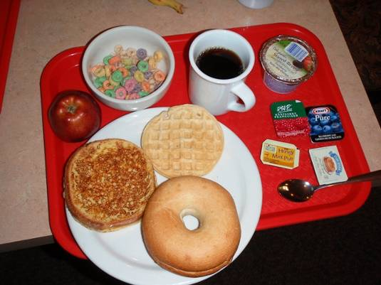
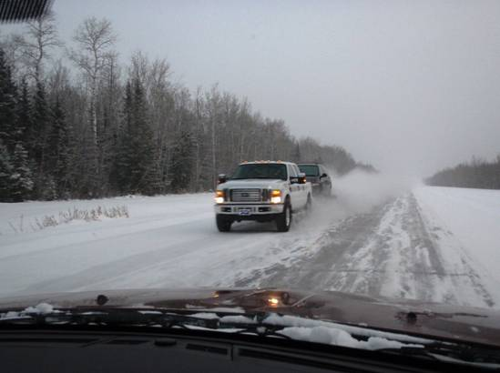
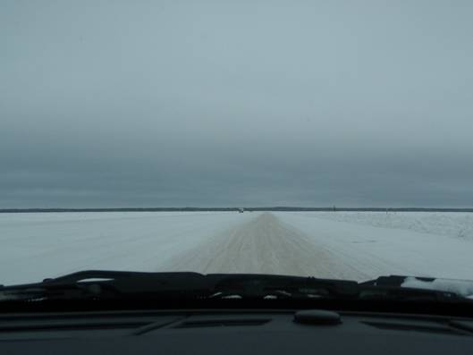
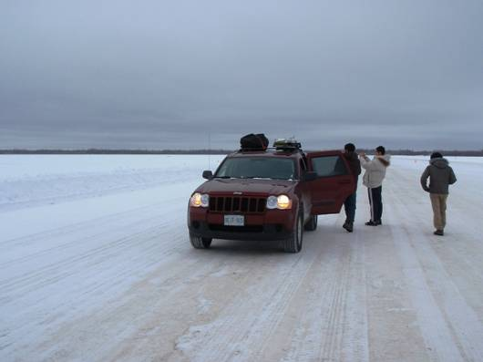
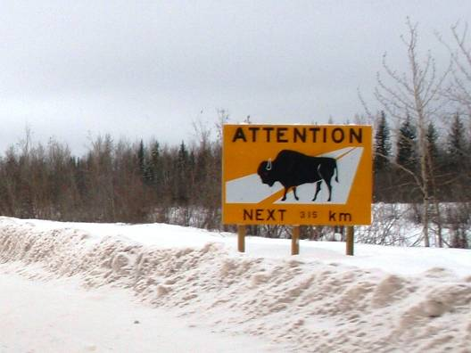
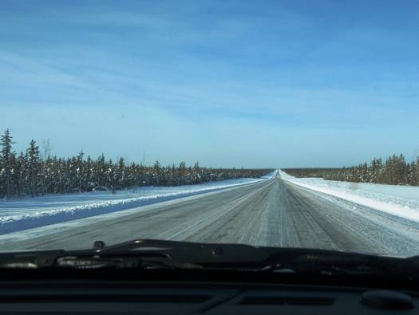
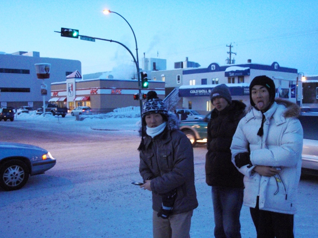
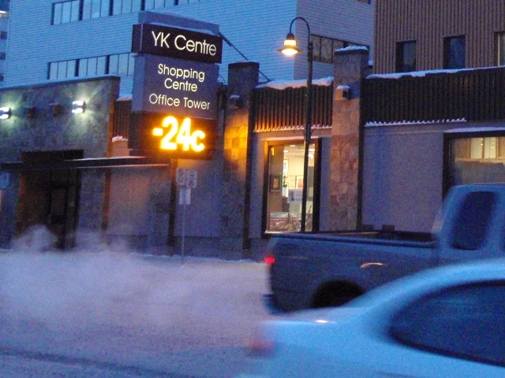
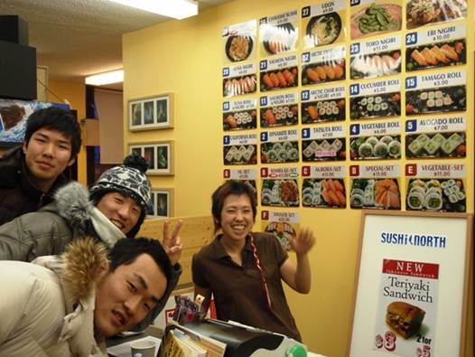
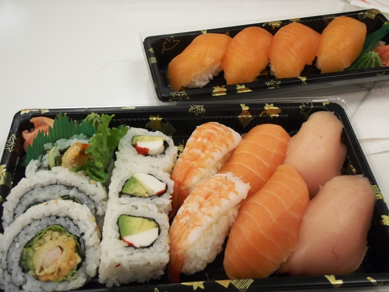

今日は今回の旅の目的地の一つであるイエローナイフ(Yellowknife)を目指す。

朝６時半、ハイレベルのモーテルを出発。

ハイウェイ３５号線を北へ。

アルバータ州からノースウェスト準州(Northwest Territories)へ。

州境の案内所。

ここからはハイウェイ１号線（マッケンジーハイウェイ）。

途中の滝（アレクサンドラフォールズ）。完全に凍りついている。

中倉。

山部。

エンタープライズ(Enterprise)でハイウェイ３号線に入る。

マッケンジー川を渡る。

冬の間だけ現れる「アイスロード」を渡る。

川が完全に凍っているため、車で走ることができる。

さらに北へ。景色がいっそう寒々しくなってくる。
夕方、ようやくイエローナイフの街に到着。

今日の走行距離は約750km。

イエローナイフの宿（Ｂ＆Ｂ）にチェックイン。
夜、さっそくオーロラ観賞に出かける。